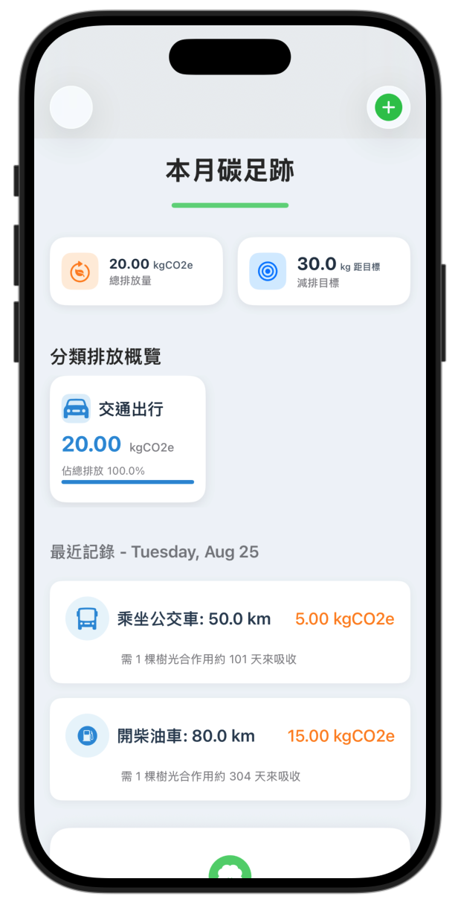
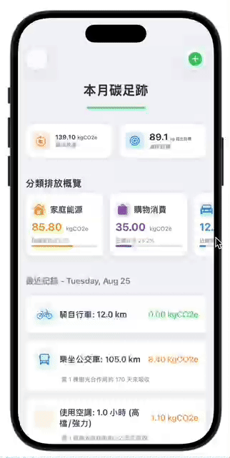

為什麼想做這個？
在日常生活中，我們每天都會產生碳排放——開車、用電、吃肉、購物……但大多數人對這些行為的環境影響沒有具體概念。市面上的碳足跡計算器要麼過於簡化（只算幾個大項），要麼複雜到需要輸入幾十個數據，讓使用者望而卻步。
所以我希望打造一個 簡單、直觀、有反饋 的 iOS App，讓使用者可以用最少的操作記錄日常活動，並即時看到自己的碳足跡。更重要的是，透過「種樹吸收」的視覺化比喻，讓抽象的碳排放數據變得具體可感。

如何實現目標？
核心功能設計
App 將日常活動分為四大類別：交通出行、家庭能源、飲食習慣、購物消費。每個類別下再細分具體活動（例如「開汽油車」、「使用空調」、「食用紅肉」等），使用者只需選擇活動並輸入數量（如里程、用電度數、食物克數），系統就會自動計算碳排放。
計算引擎基於碳排放係數（Emission Factor），例如汽油車每公里排放 0.18 kgCO2e，紅肉每公斤排放 25 kgCO2e。同時支援「本地採購」、「有機食品」、「二手商品」等減排選項，讓計算更貼近真實情境。
視覺化反饋
除了數字，App 提供兩種視覺化方式：分類排放概覽（以彩色卡片顯示各類別佔比）和 「種樹吸收」比喻（告訴使用者需要種幾棵樹、光合作用多久才能吸收這些碳排放）。這種設計讓抽象的數據變得直觀、有感。
技術架構
使用 SwiftUI 構建 UI，採用 MVVM 設計模式（ActivityStore 作為 ViewModel 管理數據）。所有數據模型（ActivityType、ActivityDetail、ActivityRecord）都使用 Swift 的 enum 和 struct 定義，確保型別安全。碳排放計算邏輯集中封裝，易於測試和擴展。
AI 輔助開發流程
這個專案最特別的地方在於：所有代碼均由 AI 生成（主要是 SwiftUI 程式碼），我扮演的是 產品經理 + 提示詞工程師 + QA 測試員 的角色。
- 🎯 構思功能需求與用戶流程
- 📝 撰寫精確的提示詞，引導 AI 生成符合架構的代碼
- 🐛 迭代除錯：發現編譯錯誤、邏輯漏洞、UI 異常，回饋給 AI 修正
- 🏗️ 把控整體架構，確保各模組之間協作正確
這種開發方式讓我深刻體會到：程式設計師的價值不再僅限於「寫代碼」，而是「解決問題的能力」——包括需求分析、架構設計、品質把關和跨領域溝通。
測試與成果
經過多輪測試與除錯，App 目前已可正常運行，涵蓋以下功能：
- ✅ 四大類別、數十種活動的碳排放計算
- ✅ 數據持久化（活動記錄保存）
- ✅ 分類排放概覽與視覺化卡片
- ✅ 「種樹吸收」比喻（動態計算樹木需求）

未來展望
- 加入圖表（折線圖、柱狀圖）顯示長期趨勢
- 個人化減排目標設定與達成進度
- 在地化排放係數（根據地區電網碳強度調整）
- 數據匯出（CSV / PDF 報告）
致謝
感謝 AI 輔助開發工具（如 ChatGPT / Claude）提供的代碼生成與除錯協助，讓這個專案得以在短時間內完成。